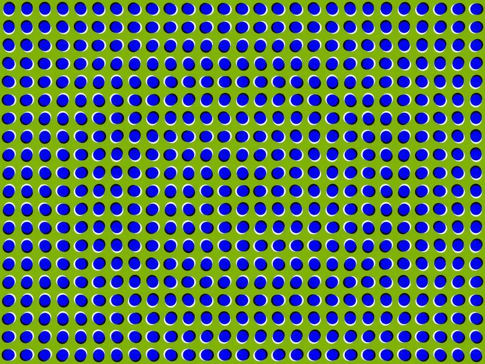
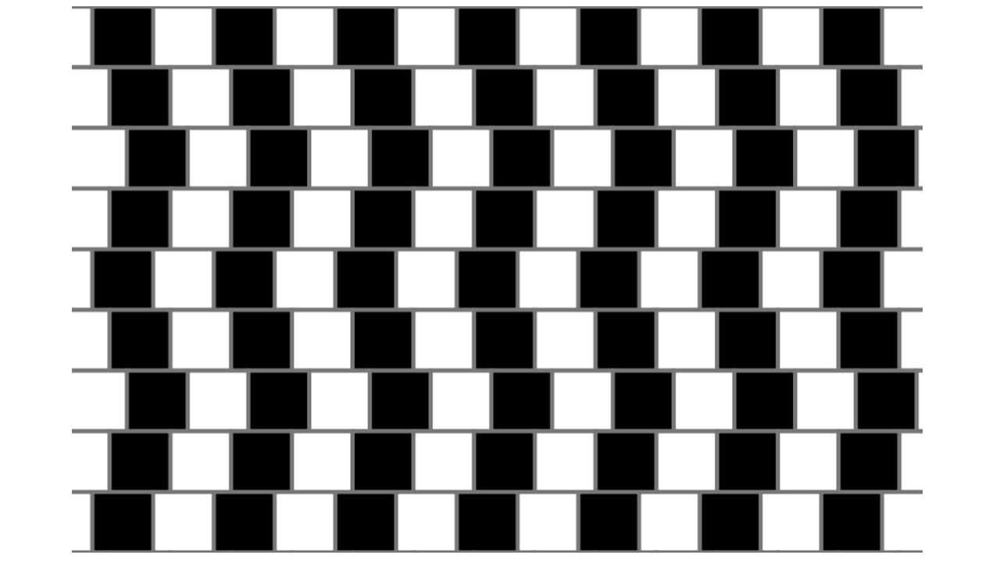
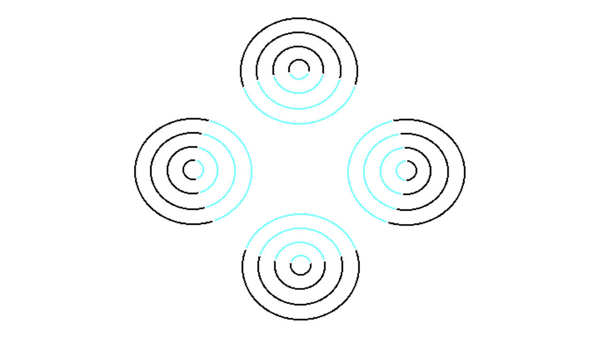

Optical illusions
Wow yeah... (i copied it all)
|  | Moving PicturesThis image is not animated. Don't believe me? Try staring at just one part of the image and you'll see it will stop moving. This is an example of a "peripheral drift illusion." It is thought that this illusion occurs because of the slight differences in time it takes to process different luminances (how intense the light is from a particular area). This slight lag in mental processing tricks the brain into perceiving movement that isn't really there. |
|  | Are These Lines Parallel?Despite what your eyes are telling you, they are. It is thought that the café wall illusion functions due to the high contrast in the two different "bricks." When interpreting images, our brains tend to "spread" dark zones into light zones, a function known as irradiation; this "movement" is probably what causes a false warping effect. |
 |
Which Line Is Bigger?They're both exactly the same! This is an example of the Ponzo illusion. This little trick takes advantage of the human brain's use of background to judge an object's size |
|  | Colors That Aren't ColorsAt first glance, you should see a semi-transparent blue circle overlaying the illustration, but you aren't really. The light blue blotch is the result of an illusion known as neon color spreading. Similar to the watercolor effect, your brain has been tricked into adding color into the bare negative spaces. |